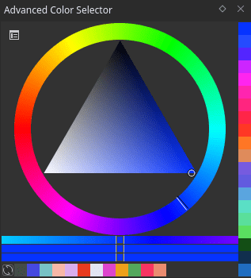

進階選色器¶
As compared to other color selectors in Krita, Advanced color selector provides more control and options to the user. To open Advanced color selector choose . You can configure this docker by clicking on the little settings icon on the top left corner of the docker. Clicking on the settings icon will open a popup window with following tabs and options:
Color Selector¶
Here you configure the main selector.
Show Color Selector
在 4.2 版本新加入: This allows you to configure whether to show or hide the main color selector.
Type and Shape¶

Here you can pick the hsx model you'll be using. There's a small blurb explaining the characteristic of each model, but let's go into detail:
- HSV
Stands for Hue, Saturation, Value. Saturation determines the difference between white, gray, black and the most colorful color. Value in turn measures either the difference between black and white, or the difference between black and the most colorful color.
- HSL
Stands for Hue, Saturation, Lightness. All saturated colors are equal to 50% lightness. Saturation allows for shifting between gray and color.
- HSI
This stands for Hue, Saturation and Intensity. Unlike HSL, this one determine the intensity as the sum of total rgb components. Yellow (1,1,0) has higher intensity than blue (0,0,1) but is the same intensity as cyan (0,1,1).
- HSY'
Stands for Hue, Saturation, Luma, with Luma being an RGB approximation of true luminosity. (Luminosity being the measurement of relative lightness). HSY' uses the Luma Coefficients, like Rec. 709, to calculate the Luma. Due to this, HSY' can be the most intuitive selector to work with, or the most confusing.
Then, under shape, you can select one of the shapes available within that color model.
備註
Triangle is in all color models because to a certain extent, it is a wildcard shape: All color models look the same in an equilateral triangle selector.
Luma Coefficients¶
This allows you to edit the Luma coefficients for the HSY model selectors to your leisure. Want to use Rec. 601 instead of Rec. 709? These boxes allow you to do that!
By default, the Luma coefficients should add up to 1 at maximum.
- Gamma
The HSY selector is linearised, this setting allows you to choose how much gamma is applied to the Luminosity for the gui element. 1.0 is fully linear, 2.2 is the default.
Color Space¶
This allows you to set the overall color space for the Advanced Color Selector.
警告
You can pick only sRGB colors in advanced color selector regardless of the color space of advanced color selector. This is a bug.
Behavior¶
When docker resizes¶
This determines the behavior of the widget as it becomes smaller.
- Change to Horizontal
This'll arrange the shade selector horizontal to the main selector. Only works with the MyPaint shade selector.
- Hide Shade Selector.
This hides the shade selector.
- Do nothing
Does nothing, just resizes.
Zoom selector UI¶
If your have set the docker size considerably smaller to save space, this option might be helpful to you. This allows you to set whether or not the selector will give a zoomed view of the selector in a size specified by you, you have these options for the zoom selector:
when pressing middle mouse button
on mouse over
never
The size given here, is also the size of the Main Color Selector and the MyPaint Shade Selector when they are called with the Shift + I and Shift + M shortcuts, respectively.
- Hide Pop-up on click
This allows you to let the pop-up selectors called with the above hotkeys to disappear upon clicking them instead of having to leave the pop-up boundary. This is useful for faster working.
Shade selector¶
Shade selector options. The shade selectors are useful to decide upon new shades of color.
Update Selector¶
This allows you to determine when the shade selector updates.
MyPaint Shade Selector¶
Ported from MyPaint, and extended with all color models. Default hotkey is Shift + M.
Simple Shade Selector¶
This allows you to configure the simple shade selector in detail.
Color Patches¶
This sets the options of the color patches.
Both Color History and Colors From the Image have similar options which will be explained below.
- Show
This is a radio button to show or hide the section. It also determines whether or not the colors are visible with the advanced color selector docker.
- Size
The size of the color boxes can be set here.
- Patch Count
The number of patches to display.
- Direction
The direction of the patches, Horizontal or Vertical.
- Allow Scrolling
Whether to allow scrolling in the section or not when there are too many patches.
- Number of Columns/Rows
The number of Columns or Rows to show in the section.
- Update After Every Stroke
This is only available for Colors From the Image and tells the docker whether to update the section after every stroke or not, as after each stroke the colors will change in the image.
History patches¶
The history patches remember which colors you've drawn on canvas with. They can be quickly called with the H key.
Common Patches¶
The common patches are generated from the image, and are the most common color in the image. The hotkey for them on canvas is the U key.
Gamut masking¶
在 4.2 版本新加入.
備註
Gamut masking is available only when the selector shape is set to wheel.
You can select and manage your gamut masks in the 色域遮罩.
In the gamut masking toolbar at the top of the selector you can toggle the selected mask off and on (left button). You can also rotate the mask with the rotation slider (right).